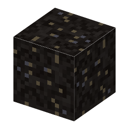

①子ども 地面にしみ出した、黒くねばる石。昔の人は接着や防水に使った。
②学生 荒野と砂漠の地表近く（Y56〜90）の砂・砂岩・テラコッタの中にある。ツルハシで掘ると瀝青（アスファルト）が出る（シルクタッチならブロックのまま）。
③大人 地下の油が地表近くまで上がり、軽い成分が蒸発して重い成分だけ残った物が天然アスファルト（瀝青）。死海（昔はアスファルト湖と呼ばれた）、トリニダード島のピッチ湖、ロサンゼルスのラ・ブレア・タール坑が有名。
④ガチ メソポタミアでは5000年以上前から、瀝青を れんがの目地や船の防水に使った。ラ・ブレアのタール坑には、マンモスやサーベルタイガーが はまって化石になって残っている。
（作り方のレシピは無い：拾う・掘る・ほかの方法）
（このアイテムを使うレシピは無い）